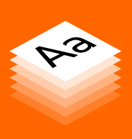
All Fonts Browse →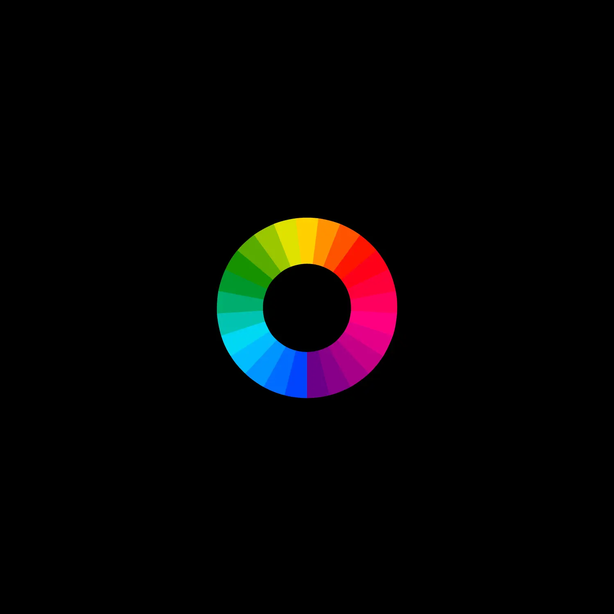
Global Fonts Browse →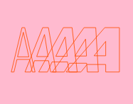
Variable Fonts Browse →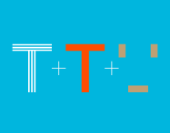
Smart Fonts Browse →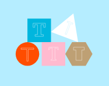
Superfamilies Browse →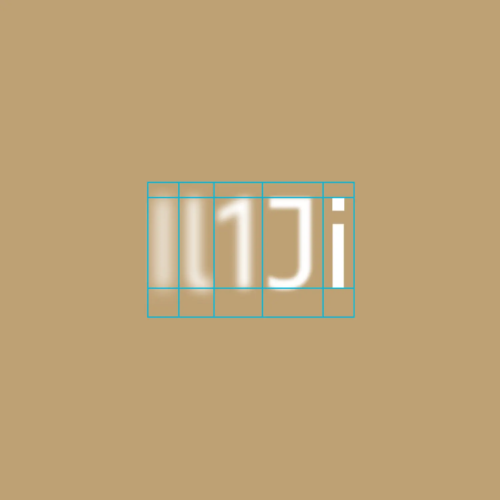
Legibility Fonts Browse →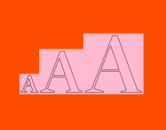
Optical Fonts Browse →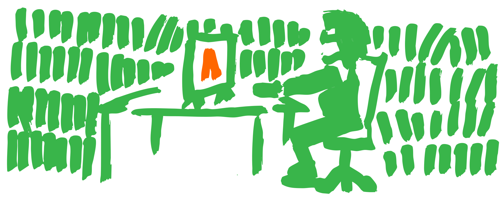
9 Jun 2026
Announcements
Typotheque is looking for a Junior Graphic Designer, 2-3 days/week to design type specimens.
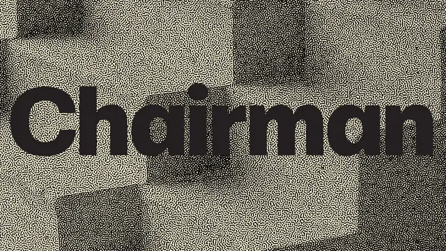
8 Jun 2026
New fonts · Announcements
Chairman is a utilarian neo-grotesque that grows quieter at headline sizes and sparkier in running text, with three width systems that shape the rhythm of paragraphs.
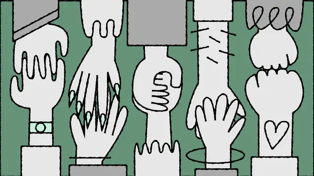
21 May 2026
By Héctor Mangas · Research
Today, in celebration of Global Accessibility Awareness Day, we are launching accessibility.tools. A free toolkit built for designers who want to create more inclusive work.
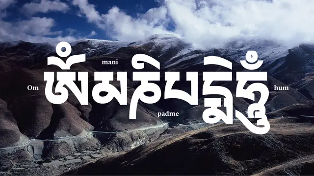
21 May 2026
New fonts · New articles
We already support 26 writing scripts, and today we add another: Tibetan, created in the 7th century to translate Buddhist texts, has barely changed since. While the spoken language has shifted dramatically.